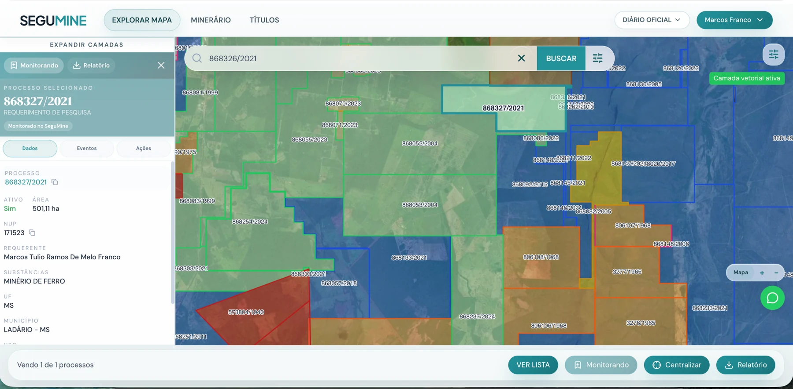
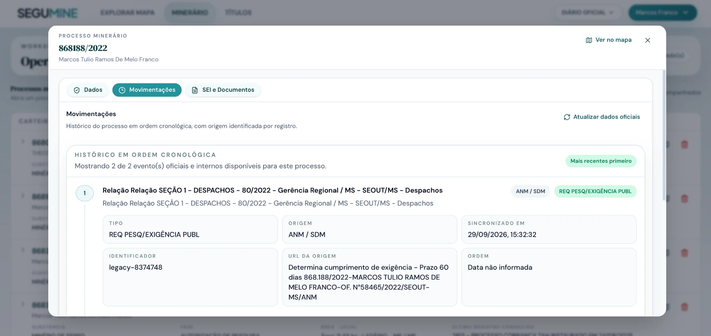
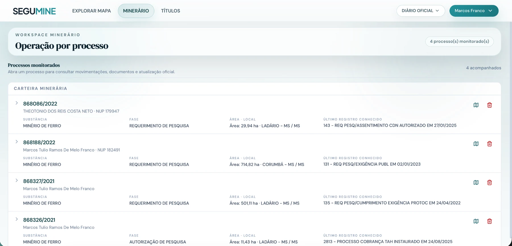

01 FONTES
Fontes separadas
Processos, mapas, documentos e atualizações aparecem em fontes, formatos e rotinas diferentes.
A base atual reúne processos minerários e suas movimentações. A próxima camada conecta pesquisa mineral, documentos técnicos, mapas e evidências de campo ao contexto de cada ativo.

Processos, mapas, documentos e atualizações aparecem em fontes, formatos e rotinas diferentes.
Relatórios, sondagens, amostras, mapas e laudos raramente estão conectados ao mesmo ativo.
Equipes especializadas voltam a buscar, conferir e remontar um histórico que deveria ser reutilizável.
A oportunidade é transformar registros dispersos em um dossiê vivo por ativo mineral.
Cada informação mantém origem, data, localização e vínculo com o ativo. A equipe volta ao mesmo contexto — em vez de reconstruí-lo.
Polígono, fase, titular e situação
Eventos oficiais vinculados ao processo
Relatórios, sondagens, amostras e mapas
Informação documentada, fonte e cobertura

O produto atual já registra movimentações com origem identificada. A próxima camada é incorporar documentos e pesquisa técnica com o mesmo padrão de proveniência.

Mapa, busca, carteiras, monitoramento e alertas.
Dados estruturados para análises e sistemas internos.
Pesquisa e documentos com origem e histórico.
Relatórios, comparações e identificação de oportunidades.
Recorte de ativos relevante para a análise de investidores.
Fontes, histórico e evidências técnicas disponíveis.
Aplicar a base ao fluxo real de avaliação e acompanhamento.
Tempo de análise, cobertura de informação e recorrência de uso.
Definir um primeiro recorte de ativos e validar como a inteligência mineral pode apoiar a análise e o acompanhamento.